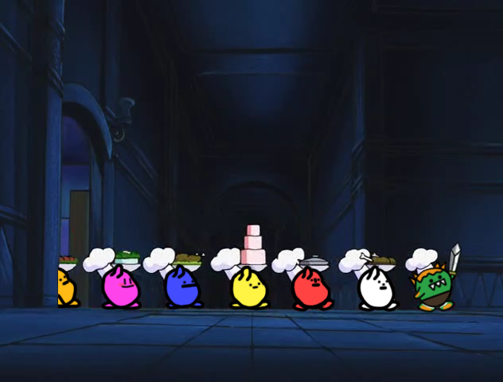
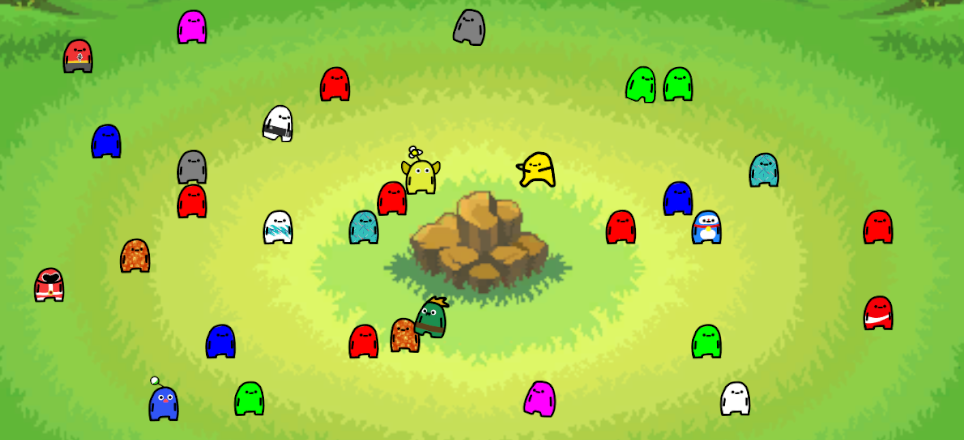
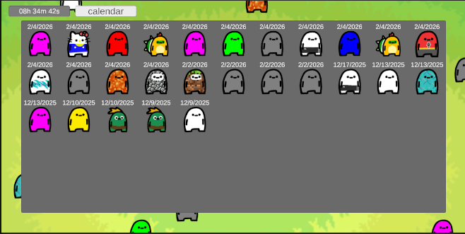

The project is officially done and released 🎉 There's still some cleanup to do on the website side of things—I had a lot of sections to update, and it's not fully finished yet—but in terms of the game itself, it's officially in v1. That alone feels surreal to say. I definitely want to keep building on it, add more content, and eventually work on an Android version with the goal of releasing it properly on an app store at some point. That's more of a long-term plan, but it's something I really want to pursue once things settle.

This week was mostly focused on drawing and finishing touches, which was honestly really exciting. During the first two weeks of February, the main focus was creating the final character assets and making sure everything in the project was functioning properly. Because of that, most of this week was dedicated to designing the epic-tier assets and implementing them into the game. It felt really satisfying to finally see these higher-tier designs come together and actually work in-game instead of just existing as concepts.
